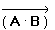

Any number of operands or expressions can be used with the vectorize operator.
Examples:
To perform an element-wise matrix multiplication of A and B, two matrices of the same size, you type A*B, select the entire expression, then type [Ctrl] [−] to vectorize the multiplication operation.

The vectorized product returns an array of the same size as A and B in which each element contains the product of the paired elements of A and B. The non-vectorized product performs a standard matrix multiplication.
You can use the vectorize operator to symbolically evaluate a function or operator applied to an array. See Evaluating Functions Symbolically for an example.
Notes:
Many functions and operators automatically vectorize their operations when you apply them to arrays and evaluate with the equal sign =. You can use the vectorize operator when a function or operator has a special meaning for arrays that you wish to override. In the example above, multiplication has a special meaning for arrays and that meaning is used by default. The vectorize operator forces an element-by-element multiplication.
Functions and operators do not automatically vectorize their operations when you evaluate them with the symbolic equal sign →. Use the vectorize operator to symbolically evaluate a function or operator applied to an array.
If you enclose a function that requires an array for an argument, such as an FFT, and you attempt to calculate the expression element-by-element, you get an error.
If you use the vectorize operator over a scalar, it does nothing, so it can be used for cosmetic display purposes.
Since operations between two arrays are performed element by element, all arrays under a vectorize operator must be the same size. Operations between an array and a scalar are performed by applying the scalar to each element of the array.
Vectorize only descends one level down in an array. It treats each nested array in a vectorized expression as a regular array, since these are the elements of the top-level array.